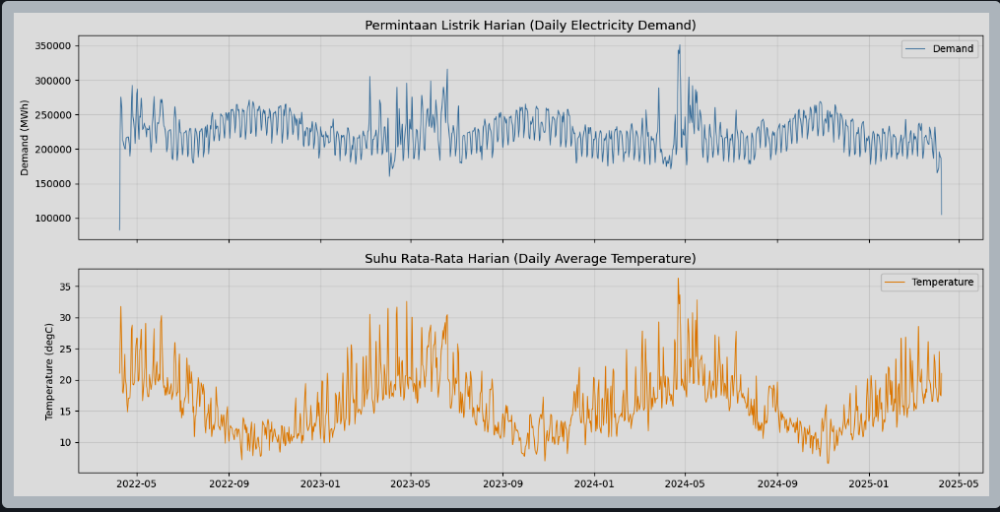
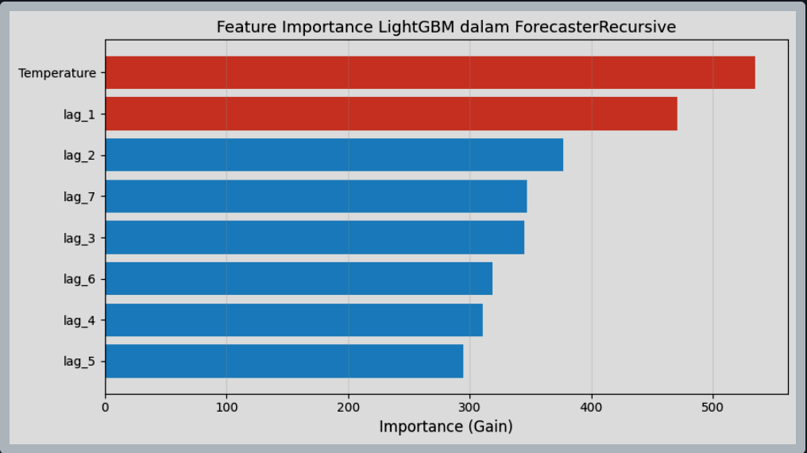
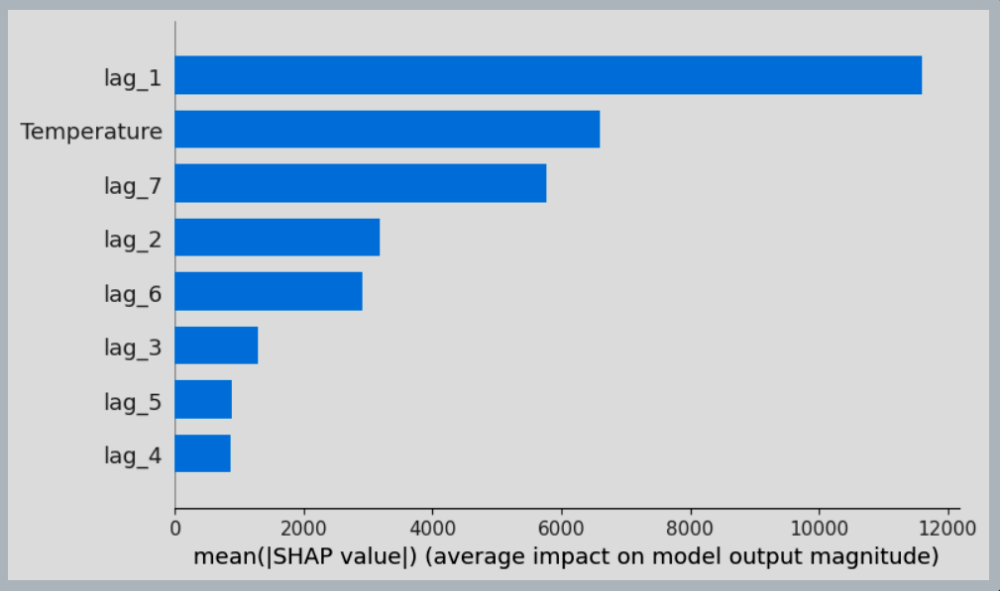
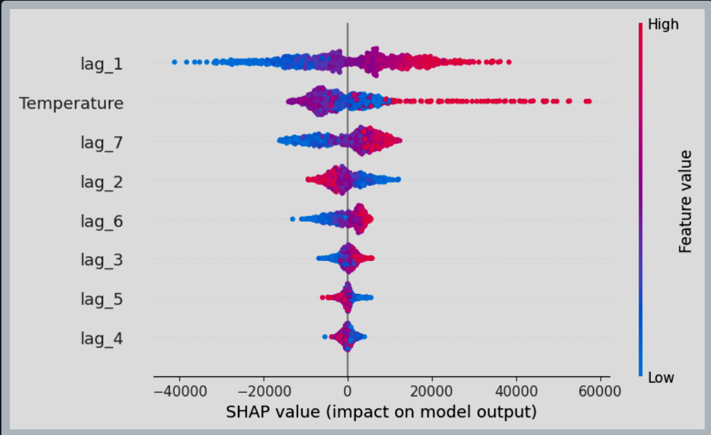
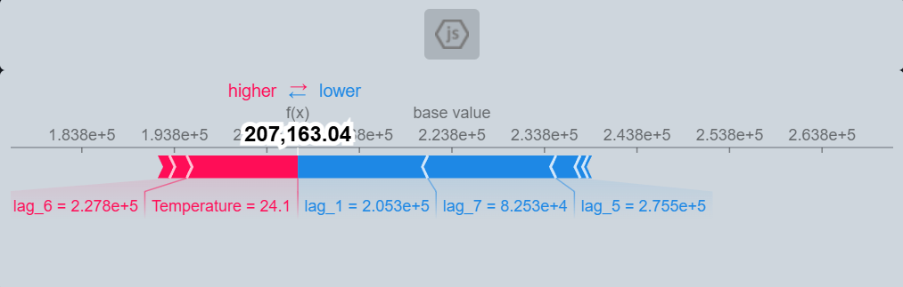
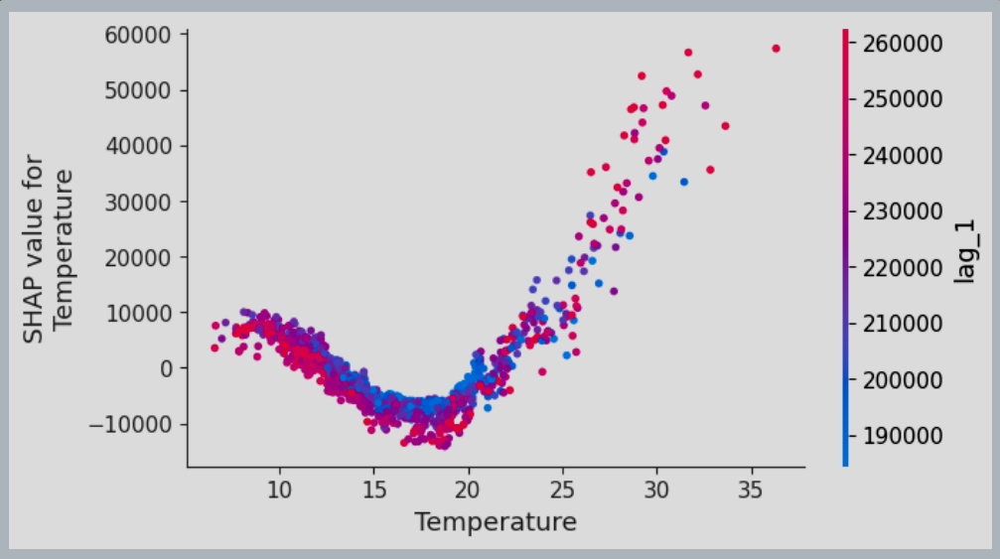
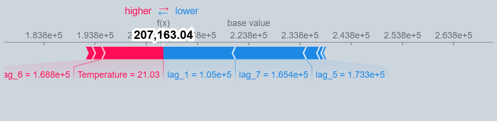
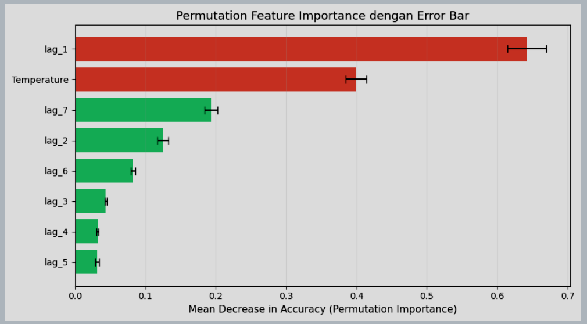
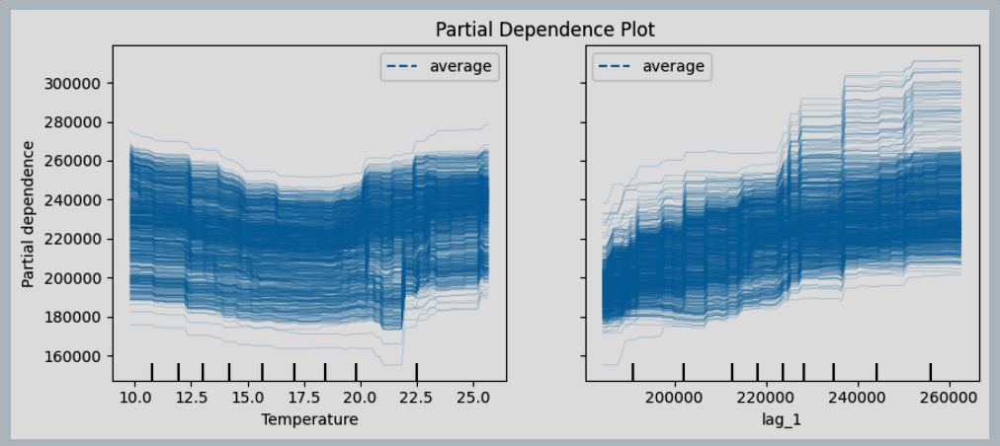

Contents
Forecaster Explainability: Feature Importance, SHAP Values, dan Partial Dependence Plots
Notebook ini merupakan reproduksi dan pengembangan dari Skforecast Explainability Guide dengan tambahan penjelasan mendalam dan jawaban pertanyaan tugas.
Jawaban Pertanyaan
Pertanyaan 1: Analisa Prediksi Tentang Apa?
Analisis dalam notebook ini adalah prediksi permintaan listrik harian (Electricity Demand) di negara bagian Victoria, Australia.
Detail Lengkap Konteks
-
Dataset:
vic_electricity— data penggunaan listrik setiap 30 menit dari jaringan listrik Victoria, Australia. -
Target Perkiraan: Kolom
Demand(total permintaan listrik dalam satuan MWh per hari). -
Fitur Tambahan: Kolom
Temperature(rata-rata suhu harian dalam °C). - Tujuan Utama: Menjelaskan mengapa model memberikan prediksi tertentu dan fitur apa yang paling berpengaruh.
- Relevansi: Permintaan listrik sangat dipengaruhi oleh kondisi cuaca sehingga suhu menjadi fitur penting.
Pertanyaan 2: Bagaimana Bentuk Data Training-nya?
Input (X_train)
| Kolom | Tipe | Penjelasan |
|---|---|---|
| lag_1 | Numerik | Nilai Demand 1 hari sebelumnya |
| lag_2 | Numerik | Nilai Demand 2 hari sebelumnya |
| lag_3 | Numerik | Nilai Demand 3 hari sebelumnya |
| lag_4 | Numerik | Nilai Demand 4 hari sebelumnya |
| lag_5 | Numerik | Nilai Demand 5 hari sebelumnya |
| lag_6 | Numerik | Nilai Demand 6 hari sebelumnya |
| lag_7 | Numerik | Nilai Demand 7 hari sebelumnya |
| Temperature | Numerik | Rata-rata suhu pada hari yang sama |
Output (y_train): Kolom Demand, yaitu
nilai permintaan listrik pada hari yang ingin diprediksi.
Berdasarkan permintaan listrik 7 hari terakhir dan suhu hari ini, berapakah permintaan listrik hari ini?
Pertanyaan 3: Apa Itu Lag?
Lag adalah nilai dari data time series pada waktu sebelumnya yang digunakan sebagai fitur input model.
Analogi Sederhana
Jika ingin memperkirakan penggunaan listrik hari ini, maka model dapat melihat penggunaan listrik kemarin (lag_1), dua hari lalu (lag_2), hingga satu minggu lalu (lag_7).
Formula Matematis
lag_k(t) = y(t - k)Dimana:
y(t)= nilai target pada waktu sekarangy(t-1)= lag_1y(t-7)= lag_7
Mengapa Lag Penting?
- Autokorelasi: Nilai masa lalu sering memiliki hubungan dengan nilai saat ini.
- Pola Musiman: Permintaan listrik hari tertentu sering mirip dengan hari yang sama pada minggu sebelumnya.
- Konteks Temporal: Tanpa lag, model tidak mengetahui kondisi sebelumnya.
Dalam Skforecast, parameter lags=7 berarti model
menggunakan lag_1 hingga lag_7 sebagai fitur.
Pertanyaan 4: Proses Analisis yang Dilakukan
Analisis dilakukan melalui lima tahapan utama sebagai berikut:
| Tahap | Nama | Isi |
|---|---|---|
| 1 | Persiapan Data | Unduh dataset, agregasi data, dan split train-test |
| 2 | Pelatihan Model | ForecasterRecursive + LGBMRegressor + lags=7 |
| 3 | Feature Importance | Analisis kepentingan fitur bawaan LightGBM |
| 4 | Analisis SHAP | Summary Plot, Beeswarm Plot, Force Plot, Dependence Plot |
| 5 | Permutation & PDP | Permutation Importance dan Partial Dependence Plot |
Bagian 1: Instalasi Library dan Import Data
1.1 Instalasi dan Import Library
Library yang digunakan dalam analisis ini:
Forecaster Explainability: Feature Importance, SHAP Values, dan Partial Dependence Plots
Notebook ini membahas explainability pada model forecasting menggunakan Skforecast, LightGBM, dan SHAP untuk memprediksi permintaan listrik harian di Victoria, Australia.
Bagian 1: Instalasi Library dan Import Data
1.1 Instalasi dan Import Library
Berikut adalah library yang dibutuhkan dalam analisis ini:
- skforecast : Framework forecasting time series berbasis scikit-learn.
- lightgbm : Model Gradient Boosting berbasis pohon yang cepat dan efisien.
- shap : Library explainability menggunakan konsep Shapley Value.
- sklearn.inspection : Digunakan untuk Permutation Importance dan Partial Dependence Plot.
import pandas as pd
import matplotlib.pyplot as plt
import shap
from sklearn.inspection import permutation_importance
from sklearn.inspection import PartialDependenceDisplay
from lightgbm import LGBMRegressor
from skforecast.datasets import fetch_dataset
from skforecast.recursive import ForecasterRecursive
print("Semua library berhasil diimport!")
1.2 Unduh dan Eksplorasi Dataset
Dataset vic_electricity berisi data konsumsi listrik
setiap 30 menit dari jaringan listrik Victoria, Australia.
Kolom Dataset
| Kolom | Keterangan |
|---|---|
| Demand | Total permintaan listrik (MWh) |
| Temperature | Suhu rata-rata udara (°C) |
| Date | Tanggal pengamatan |
| Holiday | Indikator hari libur |
data = fetch_dataset(name="vic_electricity")
data.head()
1.3 Agregasi ke Frekuensi Harian
Data asli memiliki frekuensi 30 menit. Untuk mempermudah analisis, data diagregasi menjadi frekuensi harian.
- Demand → dijumlahkan (sum)
- Temperature → dirata-ratakan (mean)
data = data.resample('D').agg({
'Demand': 'sum',
'Temperature': 'mean'
})
1.4 Penyesuaian Tanggal (Date Shifting)
Tanggal pada dataset digeser agar dimulai dari tahun 2022 tanpa mengubah nilai asli data.
new_dates = pd.date_range(
start='2022-04-08',
periods=len(data),
freq='D'
)
data.index = new_dates
1.5 Visualisasi Data Awal
Visualisasi dilakukan untuk memahami pola musiman dan tren permintaan listrik terhadap suhu.
fig, axes = plt.subplots(
2, 1,
figsize=(14,7),
sharex=True
)
Terlihat pola musiman: permintaan listrik meningkat saat suhu sangat panas maupun sangat dingin.

1.6 Split Data Training dan Testing
Data dibagi menjadi dua bagian:
- Training Set : digunakan untuk melatih model.
- Testing Set : digunakan untuk evaluasi model.
data_train = data.loc[:'2026-05-26']
data_test = data.loc['2026-05-27':]
Bagian 2: Membuat dan Melatih Forecaster
2.1 Konsep ForecasterRecursive
ForecasterRecursive merupakan metode forecasting multi-step yang menggunakan hasil prediksi sebelumnya sebagai input untuk prediksi berikutnya.
Komponen Model
- Estimator :
LGBMRegressor - Lags :
7 hari - Variabel Exogenous :
Temperature
2.2 Ilustrasi Lag
| Hari | lag_7 | lag_6 | lag_5 | lag_4 | lag_3 | lag_2 | lag_1 | Temp | Target |
|---|---|---|---|---|---|---|---|---|---|
| t=8 | d1 | d2 | d3 | d4 | d5 | d6 | d7 | T8 | d8 |
2.3 Pelatihan Model
forecaster = ForecasterRecursive(
estimator=LGBMRegressor(
random_state=123,
verbose=-1
),
lags=7
)
forecaster.fit(
y=data_train['Demand'],
exog=data_train['Temperature']
)
Model berhasil dilatih menggunakan 7 lag terakhir dan suhu sebagai fitur tambahan.
Bagian 3: Feature Importance (LightGBM)
Apa itu Feature Importance?
Feature Importance adalah ukuran seberapa besar kontribusi suatu fitur dalam membantu model membuat keputusan prediksi.
Dalam LightGBM, importance dihitung berdasarkan:
- Gain → penurunan error saat fitur digunakan.
- Split Count → frekuensi fitur digunakan pada pohon keputusan.
Semakin tinggi nilainya, semakin penting fitur tersebut bagi model.
Ekstraksi Feature Importance
feat_imp = forecaster.get_feature_importances()
display(feat_imp)
Hasil Feature Importance
| Feature | Importance |
|---|---|
| Temperature | 535 |
| lag_1 | 471 |
| lag_2 | 377 |
| lag_7 | 347 |
| lag_3 | 345 |
| lag_6 | 319 |
| lag_4 | 311 |
| lag_5 | 295 |

Berdasarkan hasil tersebut, Temperature dan lag_1 menjadi fitur yang paling berpengaruh terhadap prediksi permintaan listrik.
Bagian 4: Matriks Pelatihan (Training Matrix)
Sebelum menjalankan SHAP, kita perlu mengakses matriks pelatihan yang digunakan model.
X_train, y_train = forecaster.create_train_X_y(
y=data_train['Demand'],
exog=data_train['Temperature']
)
Struktur Data Training
| Kolom | Keterangan |
|---|---|
| lag_1 | Demand hari sebelumnya |
| lag_2 | Demand dua hari sebelumnya |
| lag_3 | Demand tiga hari sebelumnya |
| lag_4 | Demand empat hari sebelumnya |
| lag_5 | Demand lima hari sebelumnya |
| lag_6 | Demand enam hari sebelumnya |
| lag_7 | Demand tujuh hari sebelumnya |
| Temperature | Suhu rata-rata harian |
Output model adalah nilai Demand pada hari ke-t.
Korelasi dengan Target
corr_matrix = pd.concat([X_train, y_train], axis=1).corr()
| Feature | Korelasi |
|---|---|
| lag_1 | 0.6810 |
| lag_7 | 0.5681 |
| lag_6 | 0.4437 |
| lag_2 | 0.2864 |
| Temperature | 0.0339 |
Bagian 5: Analisis SHAP
Konsep SHAP
SHAP (SHapley Additive exPlanations) merupakan metode explainability berbasis teori permainan yang menjelaskan kontribusi setiap fitur terhadap hasil prediksi model.
Formula SHAP
Prediksi = Base Value + SHAP(lag_1) + SHAP(lag_2) + ... + SHAP(Temperature)
Kelebihan SHAP
| Aspek | Feature Importance | SHAP |
|---|---|---|
| Arah Pengaruh | Tidak Ada | Ada |
| Penjelasan Lokal | Tidak | Ya |
| Penjelasan Global | Ya | Ya |
| Interaksi Fitur | Tidak | Dapat Dianalisis |
Membuat SHAP Explainer
explainer = shap.TreeExplainer(
forecaster.estimator
)
shap_values = explainer.shap_values(X_train)
Base Value
Base Value merupakan rata-rata prediksi model pada seluruh data training.
Base Value = 223820.31 MWh
SHAP Summary Plot
Summary Plot menunjukkan fitur yang paling berpengaruh secara global.
- Temperature memiliki kontribusi sangat tinggi.
- lag_1 menjadi fitur historis paling penting.
- lag_7 menunjukkan adanya pola mingguan.

SHAP Beeswarm Plot
Beeswarm Plot memperlihatkan arah kontribusi setiap fitur.
- Merah = nilai fitur tinggi.
- Biru = nilai fitur rendah.
- Kanan = meningkatkan prediksi.
- Kiri = menurunkan prediksi.

SHAP Dependence Plot
Dependence Plot menunjukkan hubungan antara Temperature dan nilai SHAP.
Ditemukan pola U, yaitu suhu sangat panas maupun sangat dingin sama-sama meningkatkan konsumsi listrik.


Bagian 6: Explainability pada Prediksi Masa Depan
Membuat Forecast
predictions = forecaster.predict(
steps=10,
exog=exog_predict
)
Hasil Forecast
| Tanggal | Prediksi Demand |
|---|---|
| 2025-04-09 | 166580.49 |
| 2025-04-10 | 177411.89 |
| 2025-04-11 | 179771.77 |
| 2025-04-12 | 175727.97 |
Analisis SHAP Prediksi Pertama
| Feature | SHAP Value |
|---|---|
| lag_1 | -30650.19 |
| lag_7 | -9739.76 |
| Temperature | -7108.53 |
| lag_6 | -6757.57 |
Nilai SHAP negatif menunjukkan fitur tersebut menurunkan prediksi dibandingkan nilai rata-rata model.

Bagian 7: Permutation Importance dan Partial Dependence Plot
Permutation Importance
Metode ini mengukur pentingnya fitur dengan cara mengacak nilainya lalu melihat penurunan performa model.
Hasil Permutation Importance
| Feature | Importance |
|---|---|
| lag_1 | 0.6423 |
| Temperature | 0.3992 |
| lag_7 | 0.1932 |
| lag_2 | 0.1249 |

Partial Dependence Plot (PDP)
PDP memperlihatkan pengaruh rata-rata suatu fitur terhadap hasil prediksi.
- Temperature menunjukkan pola non-linear.
- lag_1 memiliki pengaruh paling kuat.
- ICE Lines menunjukkan variasi antar observasi.

Bagian 8: Kesimpulan
Berdasarkan seluruh metode explainability yang digunakan, ditemukan bahwa Temperature dan lag_1 merupakan faktor paling dominan dalam mempengaruhi permintaan listrik harian.
Rangkuman Jawaban Pertanyaan
- Analisis digunakan untuk memprediksi permintaan listrik harian di Victoria, Australia.
- Data training terdiri dari lag_1 hingga lag_7 dan Temperature, dengan target berupa Demand.
- Lag adalah nilai historis pada periode sebelumnya yang digunakan sebagai fitur prediksi.
-
Analisis dilakukan melalui:
- Persiapan Data
- Pelatihan ForecasterRecursive
- Feature Importance
- SHAP Analysis
- Permutation Importance
- Partial Dependence Plot